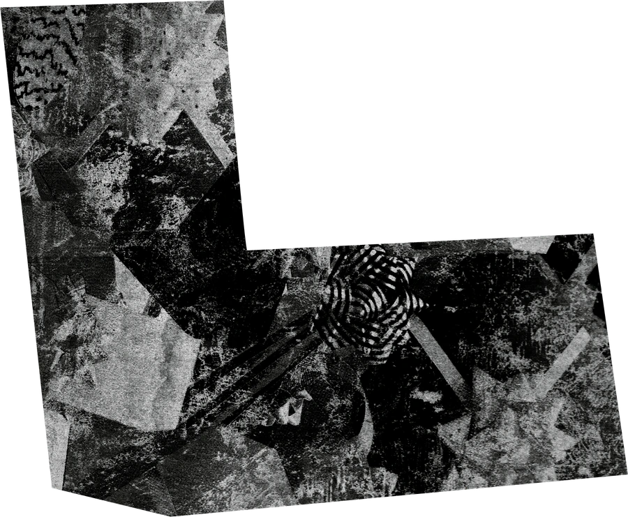
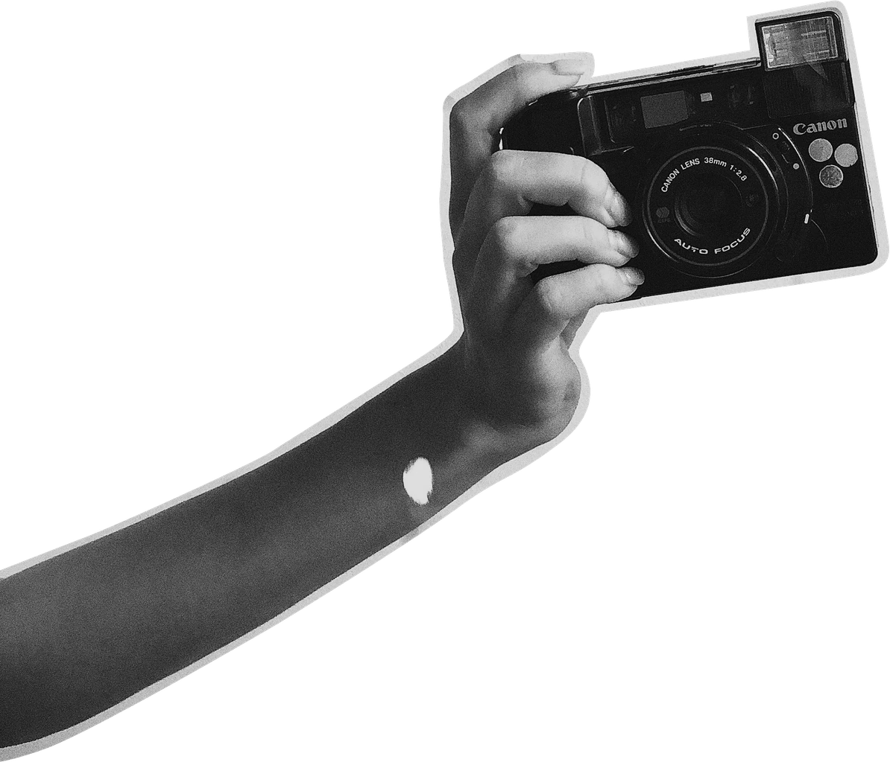
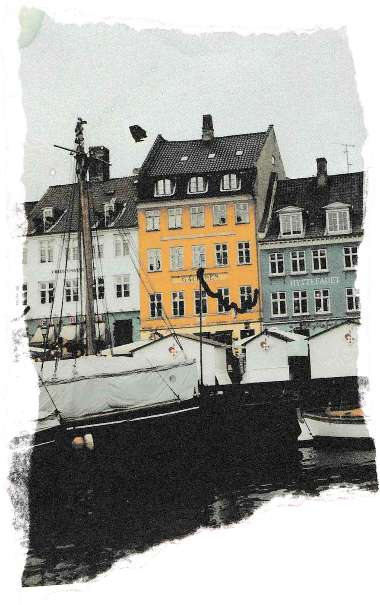
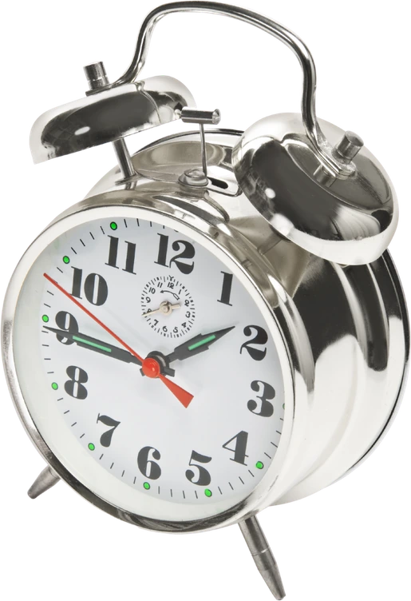
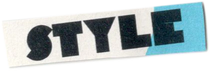
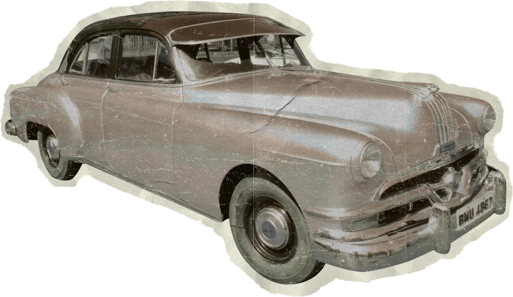

LEARNING
Following questions through data science, machine learning and AI.




A curious mind,
I turn questions into projects.
And leave a little room for poetry.

Same me.I’m Bhoomi—a Data Science student at NMIMS MPSTME, Mumbai, with a curiosity that rarely stays in one lane.
I explore machine learning and AI through questions that interest me: the patterns in handwriting, the ingredients behind beauty products, and the stories hidden in consumer behaviour.
Beyond the code, I write poetry, build with people, and collect little things that make ordinary days interesting. This is a collection of what I’m learning, making, and growing into.
MY TOOLKIT
From the handwritten to the algorithmic.
Pick a project to open its story.
“Keep learning. Keep making.
Leave room for the unexpected.”
Following questions through data science, machine learning and AI.
Turning curiosity into research, code and creative experiments.
Growing through responsibility, hospitality and the people around me.
The first chapters of learning and leadership.
Exploring community, creativity and events.
B.Tech · Data Science
Mumbai, India
Some lessons happen in a classroom.
Others happen when people count on you.
MUNSOC · NMIMS MPSTME
My journey through MUNSoc has grown from hospitality execution to leadership and communication. Each role has taught me to take responsibility, coordinate with others, and help bring a shared plan to life.
Q75 SIGNATURES · 2024–2026
Two years working on content strategy—bringing my interest in words, creativity and communication into a professional setting.
SUMMER CAMPS · VOLUNTEERING
Volunteering at summer camps offered another way to work with people: with patience, energy and an openness to seeing things differently.
Books, poetry, fashion, music, travel and cafés.
A few things that make me, me.
01 / BETWEEN THE LINES
02 / ON REPEAT
Tap the record for a 15-second preview from my playlists.
Hear the full song on Apple Music ↗Listen to my six playlists ↗03 / COLLECTING MOMENTS
New corners, café tables, mountain air. A little pause is always a good idea.
Explore my cafés & travels ↗
There’s always another story around the corner.
Have something in mind?
A project, an opportunity, or a good conversation.
I’d love to hear from you.